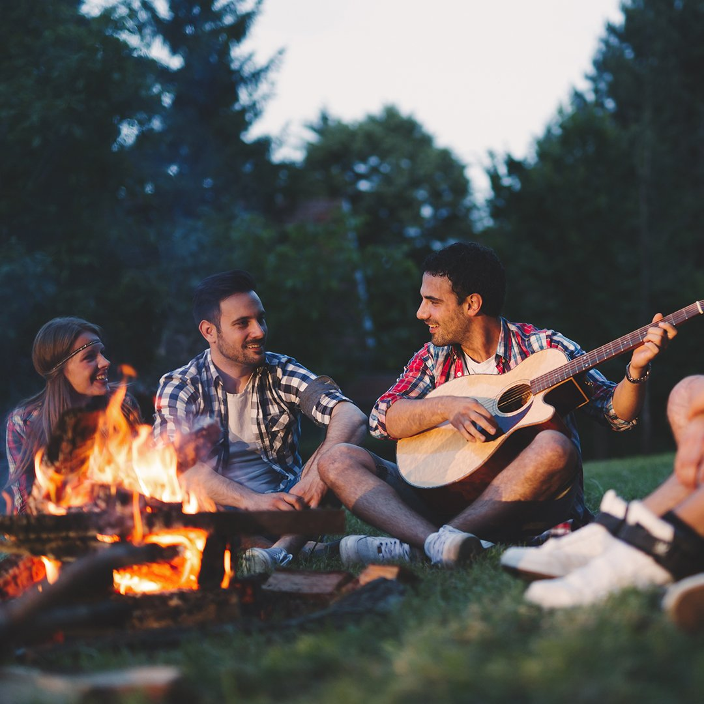
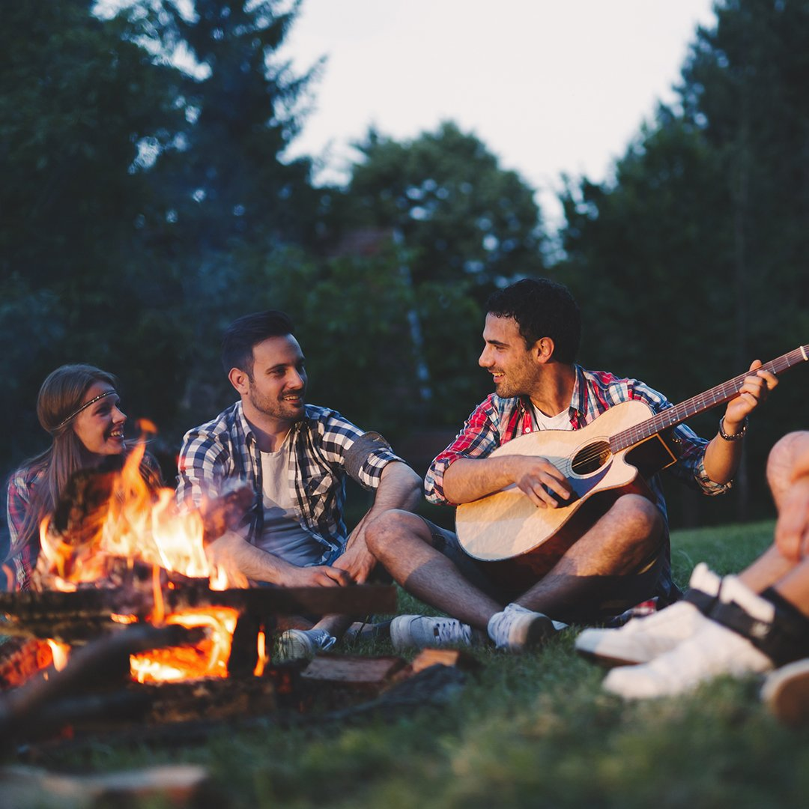

На сегодня у нас в стране есть огромное количество туркомпаний, организующих водные походы. Путешественникам предлагают сплавы на один, два, три и четыре дня с ночевками в усадьбах или в лесу.
При этом, полностью обеспечивают туриста: готовят ему еду на костре, устанавливают палатку, проводят инструктаж и страхуют. Последний момент – один из самых важных: практически у каждой компании в штате есть свой опытный инструктор, который научит правильно махать веслом (устойчивое выражение байдарочника) даже того, кто впервые в жизни видит байдаку.
К слову о байдарках. Сегодня в Беларуси предлагают прокатиться на надувных, пластмассовых и каркасно–разборных байдарках. Плюс, есть возможность покататься на каяках. Единственное, чем не богата Беларусь –прозрачными байдарками. Такой вид уже давно популярен во всем мире, еще бы: гребешь, и видишь, что находится под водой.
Очень надеемся, что в скором времени чудо инженерной мысли появится и у нас.
Да, вам не показалось: теперь у всех желающих есть возможность прокатиться по столичной реке Свислочи на байдарке. Подобное развлечение появилось в прошлом сезоне. Ребята из veslo.by организовали водный маршрут на 10 километров: старт от водохранилища Дрозды, прибытие в парк Победы. Все лето катали и удивляли минчан и гостей города:
«Мы прокатили по Свислочи довольно много людей. Среди них были и иностранцы, которые всегда очень удивлялись возможности сплава на байдарке по городу. А все потому, что ни в одной столице Европы нет подобного», – рассказывает один из организаторов и инструкторов Егор.
За все время водных покатушек по городу, в Свислочь окунулись лишь раз: опытные ребята решили побаловаться на реке и скинули с байдарки друг друга. Страшно ли упасть в городскую реку? Егор говорит, что не страшно: «В конце города, безусловно, купаться не стоит, а вот в верховье, там, где мы и катаем, – вода чистая».
Сплав по этой реке уже успел стать «попсой» – летом просто неимоверное количество белорусских туристов сплавляются именно по Ислочи. Так что движение на этой реке в июне и июле, как на главной магистрали: люди есть и на реке, и на берегу.
Чем же там манит путешественников Ислочь? Во-первых, она находится вблизи Минска (30–40 километров), что избавляет от проблемы трансфера. Во–вторых, в реке очень чистая вода (вот сюда бы прозрачные байдарки). В–третьих: большое количество притопленных коряг, поваленных деревьев и остатков мостов, которые делают поход более динамичным и веселым.
В общем, сплав по Ислочи подойдет экстравертам, которые любят активно помахать веслом.
В этом маршруте самое интересное – погружение в историю. Раньше на берегу Сулы работало огромное количество мельниц. Многие из которых сохранились до наших дней. Так вы можете сделать остановку около приглянувшегося вам домика из красного кирпича и побродить вокруг и внутри забытого богом места.
К слову, еще в прошлом столетии эта река была судоходной, но во времена второй мировой войны, леса вокруг рубили на нужды армии и вода ушла. С каждым годом ситуация становится все хуже: уже в апреле этого года уровень воды в реке был минимальным для весны. Тем не менее, сплав по Суле все еще доставляет и радует дивными пейзажами и спокойствием.
Классический водный маршрут, проходящий по одним из самых живописных мест Беларуси: пейзажи меняются, начиная от холмов, заканчивая равнинами и высокими берегами.
В этом маршруте также интересна историческая составляющая. На берегу Нарочанки стоит деревня–музей Забродье. Пока ваши байдарки будут сохнуть на берегу, вы сможете прогуляться по нетронутой человеком природе и увидеть: игровые автоматы СССР, часовню, музеи быта и ретро–техники. При желании, даже прокатиться на танке.
После снова вернуться к байдаркам и доплыть до спокойной Вилии, на берегу которой тоже есть один занимательный музей – усадьба композитора Михаила Огинского.
К слову, еще в прошлом столетии эта река была судоходной, но во времена второй мировой войны, леса вокруг рубили на нужды армии и вода ушла. С каждым годом ситуация становится все хуже: уже в апреле этого года уровень воды в реке был минимальным для весны. Тем не менее, сплав по Суле все еще доставляет и радует дивными пейзажами и спокойствием.
На этом пути вас ждет множество и завалов, которые создадут эффект а–ля горной реки. Еще будут затопленные и поросшие крапивой берега, где можно увидеть хищных птиц – коршунов и орлов. В общем, места там глухие, но спокойные.
Еще один плюс похода по этому маршруту: экскурсия на иловский плодоконсервный завод. Естественно, с дегустацией плодовых вин. Этакий трэшачок с погружением.
Байдарочники, прошедшие по маршруту говорят, что путь очень атмосферный, да и вино неплохое.